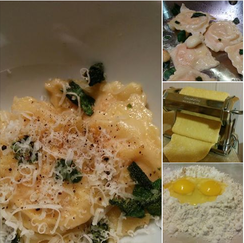
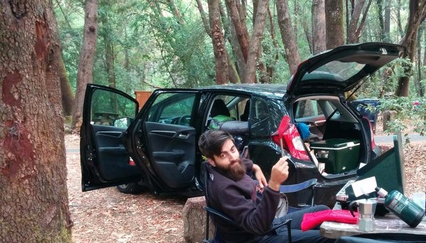
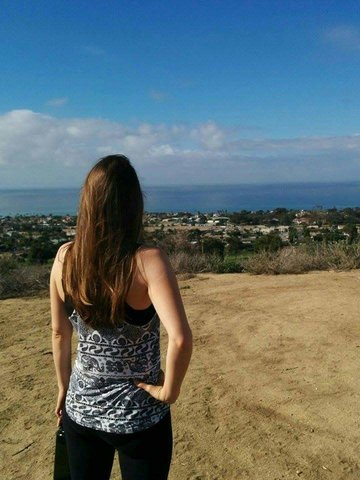
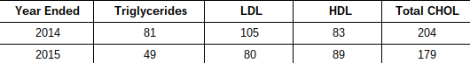

- Camped out for three weeks The pristine calm of Crater Lake.
- Learned how to cut my hair (and how not to)
- Cooked more meals for myself  Handmade ravioli completely from scratch
- Took control of my anxiety
- Lowered my cholesterol
- Learned to drive a manual transmission  Love this car! It fits my whole world.
- Learned to manually drive my computer (aka command line and coding)
- Made money on eBay
- Thought clearly  Contemplating what really matters
- Read Leisurely
While a tad stressful at times to find a campsite for the night (we didn’t reserve ahead of time) nothing compares to the extraordinary feeling of falling asleep and waking up surrounded by nature. The rising and setting sun become the clockwork by which the day begins and ends. As the sun sets you become keenly aware of the creatures that were around you all day and the rising sun cues the change in woodland tempo and melody. Nature has a beauty all its own that is unduplicable and must be experienced first hand to be understood.
I didn’t have internet access on my first attempt so I just sort of winged it...and you could tell (sorry, all the pictures got deleted). I quickly learned the best ways to conceal a bad haircut. Nothing makes you feel like a silly kid again quite like getting a little too scissors-happy on your own hair. My second attempt, with the aid of several Youtubers, produced much better results with which I am surprisingly pleased.
When all time is free time you gain a different perspective on how best to spend it. Eating out saved time, for which I traded money. Now that I had plenty of time it felt okay to prepare a time consuming meal and test out unique recipes. I made Pad Thai, played with sourdough starter, and even made a hundred homemade ravioli plus side dishes for Christmas dinner (compliments to Chef John for the ravioli recipe). Talk about feeling accomplished.
A lot of things were contributing to my anxiety, sitting in a cube all day with no natural light for starters. During my time away I was able to identify more anxieties and focus on controlling and ridding myself of them. I became more active, ate healthier meals, drank plenty of water, did breathing exercises, got more sunlight and nature exposure, and desensitized myself to anxiety triggers. For those who haven’t experienced extreme anxiety, think of it as living with a fifty pound weight against your chest - now remove it and feel the relief. Feels good.
This goes along with cooking the majority of meals for myself and lowering my anxiety. Before I went on sabbatical my annual blood work showed that my total cholesterol was ever so slightly higher than ideal. This was surprising to me as a 25 year old with healthy BMI, generally healthy eating habits, and a practically meat-free diet. Six months after I left my job I had blood work done again. Here are the results!
 Look at that cholesterol drop!A condition of leaving my job was selling our two cars and replacing them with a nice little Honda Fit - the perfect camping, roadtripping, adventuring car. I never learned to drive my husband’s old manual car but agreed that our new vehicle would be a manual transmission. Becoming a one car household left me little choice this time but to learn to drive it. Let me tell you how freeing and fun it is to be able to drive a zippy little manual subcompact car. A bit annoying, I’ll admit, in LA traffic but fun for the majority of the time and not nearly as hard to learn as I had built up in my mind.
 You'll get it once you learn it.
You'll get it once you learn it.
If the control of driving a manual transmission appeals to you then I highly recommend taking control of your computer by learning to use command line, installing Linux, and learning to code in general. While an interface is handy and the command terminal can look like an intimidating step back in time to an era of black and green screens, feeding commands to your computer is not only powerful but downright fun. There are so many free online resources to help you get started - it doesn’t hurt to try it out.
Well, technically speaking my husband made money on eBay so I can’t really take credit for this. But, I did help clean out our place and find listable items. The burden of possessions has been lifted from our household and my house motto is no longer ‘I might need that someday’. Call it becoming minimalist if you want, but getting rid of possessions when you no longer use them is a great way to prevent the accumulation of clutter. You might also pull in a fair chunk of change. One month my husband made $500 from unwanted stuff lying around. Winning!
When I was working my thinking was frantic. ‘I may never have a free moment again to think so I have to get it all out of the way right now in this one little moment.’ This was my mindset. Now I have plenty of time to think - about my life, my goals, my future, my present, what is and isn’t achievable … anything and everything, really. I also have time, or rather I don’t feel bad about setting aside time, for unguided, free flowing meditation.
Many people say they don’t read much for leisure after high school and college. It is a lamentable fact but it makes sense. When you work a nine to five job, you really only have a certain number of pre-established leisure hours. We can convince ourselves that the more active we are, the more social media photos we have to show for our leisure, the better spent our time will have been. ‘Photo or it didn’t happen.’ The joys of reading should not be limited to the first 20 years of life or to formal education. Reading is for everyone, in all stages of life. We can all learn and take pleasure from a good book. But if you must share it on social media, there's a place for that too.